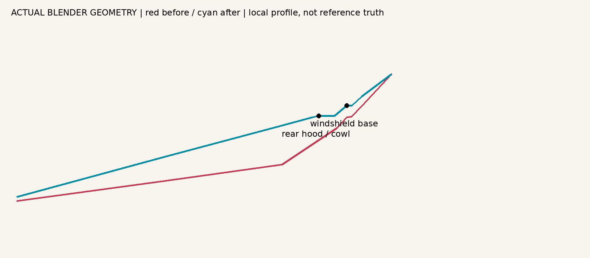

Saab 900 Classic · hood & cowl
Measured before/after refinement of the latest Blender model. Rear hood raised into a coherent forward-falling wedge. A short geometric cowl replaces the rounded transition. Roof, rear, wheelbase and nose are preserved.
The real manufacturer drawing is a small 1985 pre-facelift three-door reference, not an exact 1988 T16 blueprint. Contour errors are comparison pixels, not verified millimetres. The later facelift photograph is qualitative evidence. No local Blender or other software is required. Physical iPad Safari FPS is untested.
| Measurement | Before | After |
|---|
| Global IoU | 0.890 | 0.900 |
| Hood mean absolute profile error (px) | 13.251 | 6.045 |
| Hood maximum profile error (px) | 28.000 | 28.000 |
| Roof mean absolute profile error (px) | 7.434 | 7.434 |
7,822 triangles · 47 meshes · 8 materials. Body and GLB checks pass. Eleven numerical silhouette tests and five validator tests pass. All eleven preview tests pass; a test-only offscreen/visible-frame timing race was corrected.
Side view
Front three-quarter
Hood / windshield base
Contour overlay — red reference, cyan model
AFTER

Deviation map — green 0 px, red 25+ px
Physical surface sections
Direct mesh profile, independent of materials or shading. Rear hood and short cowl have separate slopes; cyan is the updated mesh. These are real model changes, not claims of exact reference dimensions.

Region checks
Hood — before / after
Windscreen — before / after
Roof — before / after
Rear — before / after
Review sheets and machine-readable evidence
Reference
Saab-Scania AB, 1985, Danish Saab 900/900i brochure rear-cover three-door illustration. Small technical review excerpt; no game-asset licence claimed. Manual mask excludes mirrors, bumper extensions and spoiler. Perspective photographs are in the source notes.

The comparison still shows differences around the windscreen and nose; exact year-specific accuracy remains unverified. No game integration or Volvo changes.